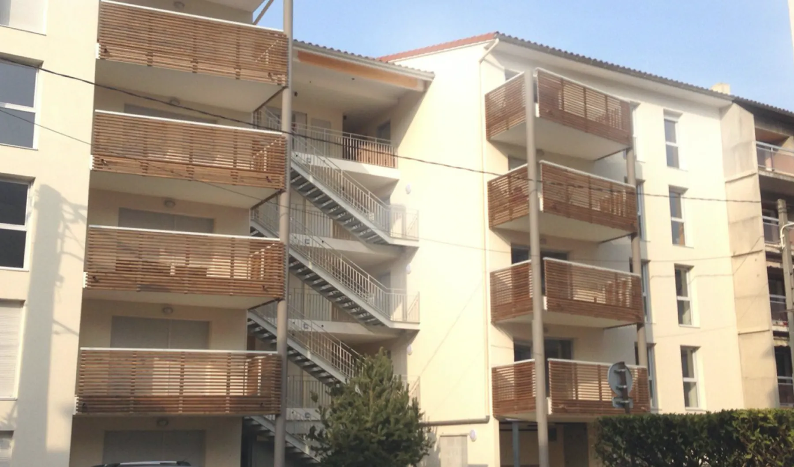
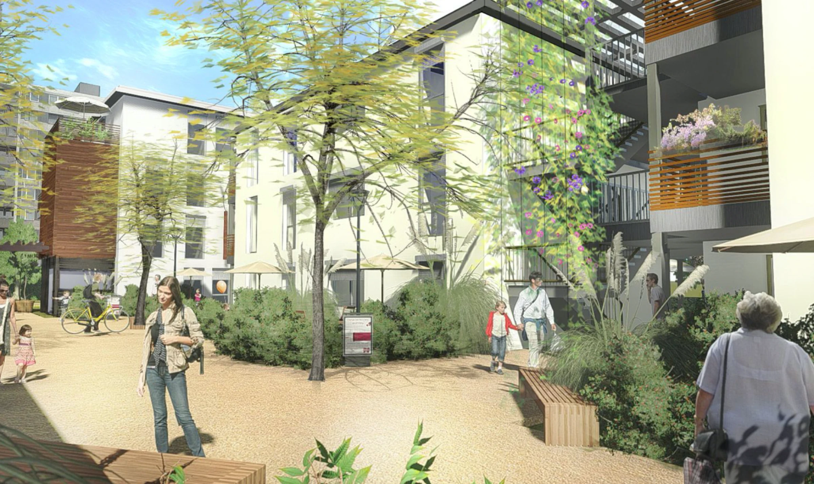
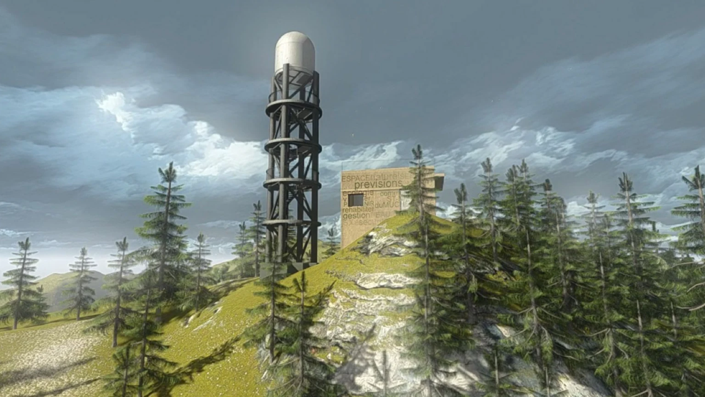

Index — 19 projets
De la tour radarau potager.
1989 — aujourd’hui
Réalisations, chantiers, études
Chaque fiche précise le maître d’ouvrage, le maître d’œuvre, la surface et le budget.

Index — 19 projets
Chaque fiche précise le maître d’ouvrage, le maître d’œuvre, la surface et le budget.
01grünboX-VienneVienne (Isère)RéhabilitationLivraison début 2025 02Tiny House UrbaineVaulx-en-Velin (Rhône)Habitat2020
02Tiny House UrbaineVaulx-en-Velin (Rhône)Habitat2020 03Logements CaluireCaluire-et-Cuire (Rhône)HabitatConception 2015
03Logements CaluireCaluire-et-Cuire (Rhône)HabitatConception 2015
04Logements VienneVienne (Isère)Habitat2012 – 2016 05Truite et BasilicLyonAgriculture urbaineEn cours
05Truite et BasilicLyonAgriculture urbaineEn cours
06Résidence intergénérationnelleDécines-Charpieu (Rhône)HabitatConception 2020 07Maison JarretDécines-Charpieu (Rhône)Habitat2021 – 2025
07Maison JarretDécines-Charpieu (Rhône)Habitat2021 – 2025 08Les Jardins ChampblancDécines-Charpieu (Rhône)HabitatConception 2016
08Les Jardins ChampblancDécines-Charpieu (Rhône)HabitatConception 2016 09Judo Club Lyon 6eLyon 6eÉquipement2016 – en cours
09Judo Club Lyon 6eLyon 6eÉquipement2016 – en cours 10École CondorcetMeyzieu (Rhône)Équipement2015 – 2016
10École CondorcetMeyzieu (Rhône)Équipement2015 – 2016 11Bureaux EPF 74Allonzier-la-Caille (Haute-Savoie)Bureaux2014
11Bureaux EPF 74Allonzier-la-Caille (Haute-Savoie)Bureaux2014 12Bureaux Récipro-CitéLyon 1erBureaux2016 – 2017
12Bureaux Récipro-CitéLyon 1erBureaux2016 – 2017 13Bureaux Kyodo YushiDardilly (Rhône)Bureaux2019
13Bureaux Kyodo YushiDardilly (Rhône)Bureaux2019
14Tour radar du MoucherotteSaint-Nizier-du-Moucherotte (Vercors)Équipement2013 – 2014 15Réhabilitation à Saint-Barthélemy-de-ValsSaint-Barthélemy-de-Vals (Drôme)Réhabilitation2013 – 2014
15Réhabilitation à Saint-Barthélemy-de-ValsSaint-Barthélemy-de-Vals (Drôme)Réhabilitation2013 – 2014 16Vallée de la GèreVienne (Isère)UrbanismeÉtude
16Vallée de la GèreVienne (Isère)UrbanismeÉtude 17Projet CouzonCouzon-au-Mont-d’Or (Rhône)Urbanisme2016
17Projet CouzonCouzon-au-Mont-d’Or (Rhône)Urbanisme2016 18La Roche-sur-ForonLa Roche-sur-Foron (Haute-Savoie)UrbanismeReportée
18La Roche-sur-ForonLa Roche-sur-Foron (Haute-Savoie)UrbanismeReportée 19Éco-quartier VendœuvresVendœuvres (Indre)Urbanisme2015 – en cours
19Éco-quartier VendœuvresVendœuvres (Indre)Urbanisme2015 – en coursLes fiches reprennent les textes et visuels du site actuel. Plusieurs projets ne sont illustrés que par des perspectives ou des plans : des photos des bâtiments livrés (avec le nom du photographe) renforceraient l’index. La Tour de Babel v2.0 et La Farandole pourront être ajoutées dès que leurs textes et images seront fournis.